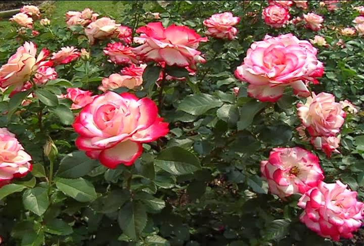

Mawar yang memiliki nama latin Rosa canina adalah tanaman hias yang menghasilkan bunga dengan warna-warni yang indah. Entah sejak kapan, bunga mawar sering dijadikan sebagai lambang cinta. Terutama mawar merah. Di Indonesia sendiri bunga mawar digunakan untuk berbagai keperluan dari mulai bunga hias, bunga meja atau bunga tabur.

Namun, dibalik keindahan warnanya ternyata bunga mawar memiliki manfaat bagi dunia kesehatan dan kecantikan. Bagi dunia kecantikan, bunga mawar sering dijadikan bahan untuk perawatan wajah, kulit dan rambut. Sedangkan dalam dunia kesehatan, bunga mawar dijadikan sebagai obat untuk beberapa penyakit seperti menurunkan kolsterol, mencegah penyakit jantung, meringankan gejala flu, diare, serta infeksi saluran kemih.
Air bunga mawar merupakan bahan pembersih alami yang kaya antioksidan dan mampu membunuh bakteri penyebab jerawat. Cuci wajah Anda dengan air hangat yang sudah dicampur dengan air mawar.
Jaga keseimbangan pH alami kulit dengan air mawar. Air mawar dapat menyeimbangan produksi sebum pada kulit. Hal ini dapat digunakan baik untuk kulit berminyak maupun kulit kering. Air mawar juga mampu melawan berbagai penyakit kulit dan eksim.
Air mawar baik untuk kesehatan rambut karena dilengkapi dengan penyejuk alami yang dapat melembapkan. Cukup tuangkan beberapa tetes air mawar saat keramas bersamaan dengan sampo untuk menciptakan aroma khas yang wangi. Bisa juga digunakan setelah keramas, tuangkan pada rambut yang masih basah, dan pijat lembut untuk membantu pertumbuhan rambut Anda. Selain itu, air mawar juga dapat mengatasi peradangan di kulit kepala dan memberantas ketombe, nih!
Mata lelah dan lingkaran gelap di bawah mata bisa diatasi dengan air mawar. Air mawar juga dapat digunakan untuk mengatasi mata merah dan meradang. Teteskan 2-3 tetes pada mata, lalu tutup selama beberapa menit untuk membersihkan mata. Lakukan secara rutin untuk menghindari infeksi mata.
Tahukah Anda? Perawatan seperti spa biasanya menggunakan air mawar sebagai bahan utamanya. Hal ini dikarenakan keharuman air mawar yang khas dan bermanfaat untuk organ intim Anda. ‘Cuci’ Miss V dengan air hangat matang yang telah dicampur dengan air mawar.
Caranya dengan mengambil 2-3 bunga mawar lalu ditambah 30gram daun sembung setelah itu cuci bersih. Kemudian rebus dengan air 600ml lalu minum airnya selama 2 kali sehari.
Rosehip ini adalah buah dari biji bunga mawar. Selain digunakan untuk bahan produk kecantikan, buah yang satu ini berhasil menurunkan tekanan darah, dan tingkat kolesterol pada tubuh manusia.